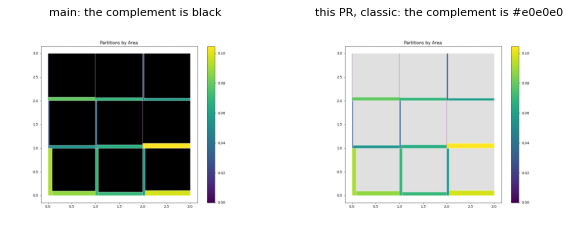
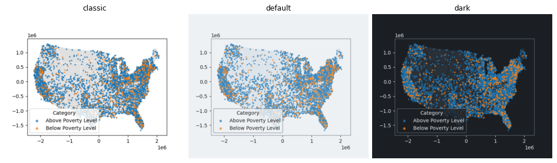
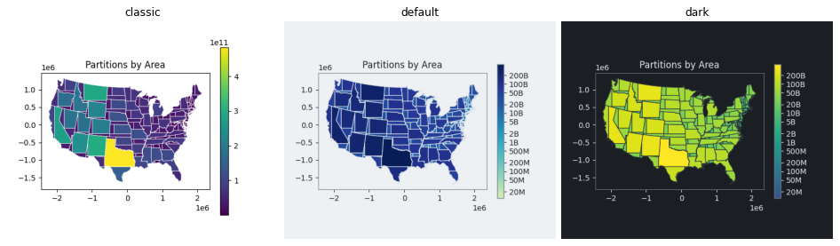
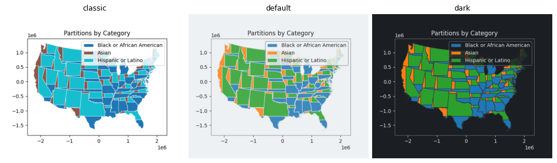
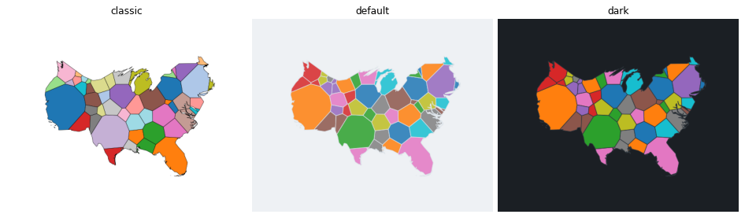
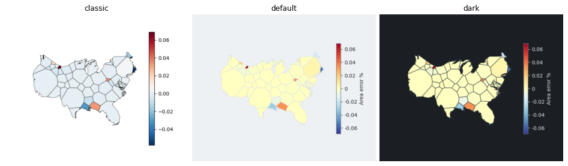
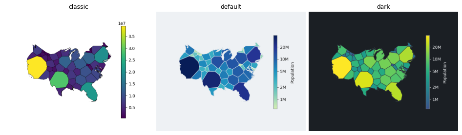
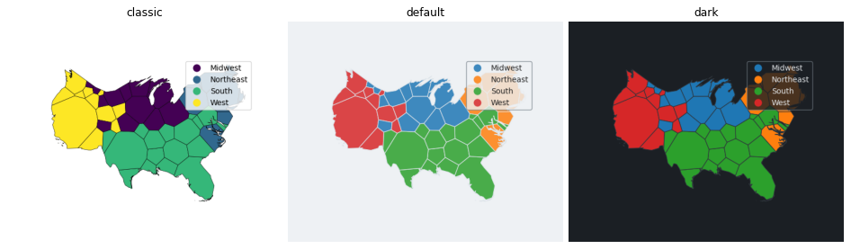

Part B1 of the style system. The Voronoi plots and animation and plot_partitions and plot_dot_density take style=, with the surface, the palettes by data role, the boundary and the colorbar of the style, and norm= (Voronoi also center= and categorical=). New PlotStyle fields reference_* and annotation_size. The fill drawing of the flow plots moves to a shared module. Fixes the black complement of plot_partitions for continuous values. The default look of these plots changes; style="classic" gives the earlier look.
make_figures.py draws each plot in classic, default and dark on the PR branch. classic is the look before this PR: the facecolors of the Voronoi categorical, column, area_error_pct and comparison plots and of the partition and dot-density plots are identical to main, except for the complement fix below.
| shared | carto_flow/_fill.py draws the fill of a GeoDataFrame for the flow and Voronoi plots |
| style fields | reference_facecolor, reference_edgecolor, reference_linewidth, reference_alpha (default and dark set them), annotation_size |
| Voronoi calls | norm=, center=, categorical=, legend_kwargs=, legend_label=, style=; legend_kwds is a deprecated alias |
| animation | the style is re-entered in the frame callback; save_animation saves the frames with the surface of the figure |
| not yet | the fixed colors of the displacement arrows, centroid markers, topology overlays and animation cells; the symbol plot |
Suite 1211 passed, ruff and mypy clean; the Voronoi, proportional and flow gallery examples and the eight edited notebooks run without error.

On main the complement is black when the partitions are colored by a continuous value (3 x 3 grid, two columns split): the missing color value became NaN and got the bad color of the colormap. Left: main. Right: this PR with style="classic", where the complement has complement_facecolor (#e0e0e0).

plot_dot_density: categorical colors and the reference layer of the style.

plot_partitions by partition area: sequential palette, log scale where the areas span more than a decade, reference fill for the complement.

plot_partitions(facecolor="category"): the categorical colors and the edge of the style.

Cells colored by index (facecolor=None): classic uses tab20; default and dark cycle the ten categorical colors of the style (neighboring cells can share a color).

area_error_pct: classic RdBu_r over the data range; default and dark diverging RdYlBu_r symmetric around 0.

Population: classic (linear, scientific notation), default (log colorbar, ticks 1M to 20M, outlined) and dark.

A text column (Region): classic draws the categories with the sequential default; default and dark use the categorical palette.